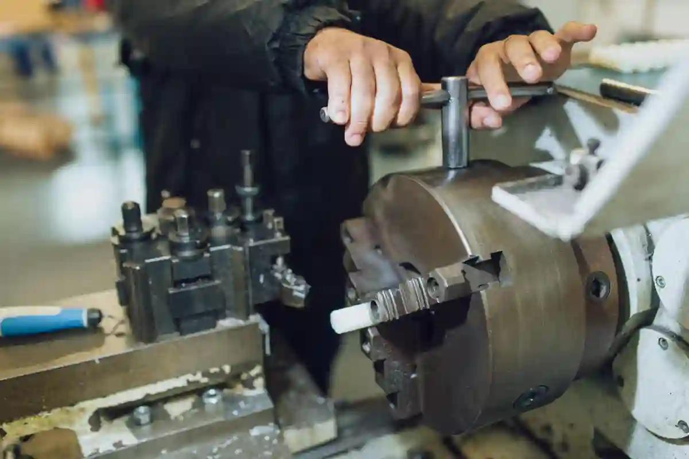

CNC Tornalama Frezeleme Farkı – Satın Alma Rehberi
CNC tabanlı talaşlı imalat süreçlerinde en sık karşılaşılan stratejik sorulardan biri cnc tornalama frezeleme farkı konusudur. Satın alma birimleri, üretim mühendisleri ve proje yöneticileri için bu soru yalnızca teknik bir tercih değil; aynı zamanda maliyet, teslim süresi ve kalite risklerini doğrudan etkileyen kritik bir karardır. Yanlış seçilen CNC işleme yöntemi, parça başı maliyeti artırabileceği gibi tolerans problemlerine ve üretim tekrarlarına da yol açabilir.
Bu rehber, cnc tornalama nedir, cnc frezeleme nedir gibi temel tanımlardan başlayarak; satın alma perspektifinden parça için doğru cnc yönteminin nasıl belirleneceğini detaylı biçimde ele alır. İçerik boyunca cnc işleme yöntemleri karşılaştırma yaklaşımıyla ilerlenmiş, teorik bilgilerin yanı sıra gerçek üretim senaryolarına dayalı değerlendirmeler yapılmıştır. Amaç; teknik ekip ile satın alma departmanı arasında ortak bir karar dili oluşturmaktır.
Not: Bu yazı, CNC üretim süreçlerinde aktif olarak çalışan mühendislik ve imalat ekiplerinin saha deneyimleri dikkate alınarak hazırlanmıştır.
CNC İşleme Yöntemleri Neden Satın Alma Kararlarını Etkiler?
CNC üretim yöntemi seçimi, çoğu zaman yalnızca teknik resme bakılarak yapılır. Oysa satın alma açısından bakıldığında cnc üretim yöntemi seçimi, tedarikçi kapasitesi, makine parkuru uyumu, işleme süresi ve birim maliyet gibi birçok parametreyi kapsar. Tornalama ve frezeleme arasındaki farklar bu noktada belirleyici hâle gelir.
Bir parçanın torna tezgâhında mı yoksa freze tezgâhında mı işleneceği; sadece geometrik uygunlukla sınırlı değildir. Seri adetler, yüzey pürüzlülüğü beklentisi, ikincil operasyon ihtiyacı ve bağlama sayısı gibi unsurlar da satın alma maliyetini doğrudan etkiler. Bu nedenle cnc tornalama frezeleme farkı, teknik bir terim olmanın ötesinde stratejik bir satın alma kriteridir.
Örneğin silindirik bir parçanın frezede işlenmesi teknik olarak mümkün olsa bile, tornalama ile üretildiğinde hem çevrim süresi kısalır hem de ölçüsel tekrarlanabilirlik artar. Bu durum, özellikle seri üretim projelerinde toplam bütçede ciddi farklar yaratır.
Satın Alma Perspektifinden CNC Süreç Analizi
Satın alma departmanları için CNC süreç analizi yapılırken üç temel soru öne çıkar:
- Parça hangi yöntemle daha stabil üretilebilir?
- Hangi yöntem daha az fire riski taşır?
- Uzun vadede hangi yöntem toplam sahip olma maliyetini düşürür?
Bu sorulara net cevap verebilmek için cnc işleme yöntemleri karşılaştırma yaklaşımı benimsenmelidir. Tornalama, dönel simetrili parçalar için doğal bir avantaj sunarken; frezeleme karmaşık geometrilerde daha esnek çözümler üretir. Ancak esneklik çoğu zaman daha uzun işleme süreleri ve daha yüksek saatlik makine maliyetleri anlamına gelir.
Bu noktada, CNC İmalat Rehberi hub içeriğinde detaylandırılan satın alma kriterleri, karar sürecinin doğru yönetilmesine yardımcı olur. Ayrıca CNC Tornalama Teknolojisi Nedir? başlıklı içerik, torna süreçlerinin teknik avantajlarını daha derinlemesine ele almaktadır.
Yanlış Yöntem Seçiminin Maliyet Riski
Yanlış CNC yöntemi seçimi, genellikle teklif aşamasında fark edilmez; sorunlar üretim başladıktan sonra ortaya çıkar. Parça başı sürelerin uzaması, beklenmeyen takım aşınmaları veya ölçü kaçmaları, maliyetleri öngörülenin üzerine taşır. Bu nedenle parça için doğru cnc yöntemi, yalnızca teknik çizime bakılarak değil, üretim senaryosu bütüncül şekilde değerlendirilerek belirlenmelidir.
Türkiye’de CNC imalat standartları ve tolerans yaklaşımları konusunda referans kabul edilen TMMOB Makina Mühendisleri Odası teknik yayınları, bu tür karar süreçlerinde güvenilir bir başvuru kaynağıdır. Özellikle ISO tolerans sistemleri ve yüzey pürüzlülüğü kriterleri açısından bu kaynaklar yol göstericidir.
CNC Tornalama Nedir? Satın Alma Açısından Ne İfade Eder?
CNC tornalama nedir sorusu genellikle teknik bir tanım gibi algılansa da, satın alma perspektifinden bakıldığında bu yöntem; öngörülebilir maliyet, yüksek tekrarlanabilirlik ve seri üretim avantajı anlamına gelir. CNC tornalama, iş parçasının kendi ekseni etrafında döndüğü ve kesici takımın bu dönme hareketine karşı ilerlediği bir talaş kaldırma sürecidir. Bu yapı, özellikle dönel simetriye sahip parçalar için doğal bir üretim avantajı sunar.
Satın alma kararlarında cnc tornalama frezeleme farkı değerlendirilirken tornalamanın en büyük artısı; işlem stabilitesidir. Parça bağlandıktan sonra çoğu ölçü tek bağlamada tamamlanabilir. Bu durum hem çevrim süresini kısaltır hem de operatör bağımlılığını azaltır. Sonuç olarak birim maliyetler daha net hesaplanabilir hâle gelir.
Tornalama süreci, özellikle mil, burç, pim, flanş ve silindirik gövdeli parçalar için satın alma açısından düşük riskli bir yöntem olarak öne çıkar. Çünkü süreç boyunca değişken sayısı frezelemeye kıyasla daha azdır.
Tornalamanın Teknik Çalışma Prensibi
CNC tornalama tezgâhlarında temel hareket parça üzerindedir. İş parçası aynaya bağlanır ve yüksek devirle döndürülür. Kesici takım ise X ve Z eksenlerinde kontrollü şekilde ilerleyerek talaş kaldırır. Bu yapı, yüzey pürüzlülüğü ve ölçüsel hassasiyet açısından oldukça kararlı sonuçlar üretir.
Satın alma birimleri için bu prensibin önemi şuradadır:
- Daha az bağlama → daha az hata riski
- Sabit kesme şartları → öngörülebilir çevrim süresi
- Daha az takım kombinasyonu → düşük sarf maliyeti
Bu nedenle parça için doğru cnc yöntemi belirlenirken dönel geometriye sahip parçalar için tornalama her zaman ilk seçenek olarak değerlendirilmelidir.
Bu konuyu teknik olarak daha detaylı incelemek için CNC Tornalama Teknolojisi Nedir? içeriği referans alınabilir. Bu içerikte torna tezgâhı türleri ve eksen konfigürasyonları detaylandırılmaktadır.
CNC Tornalamanın Satın Alma Avantajları
Satın alma süreçlerinde tornalamanın öne çıkmasının temel nedeni, toplam sahip olma maliyetinin daha düşük olmasıdır. Bu avantaj birkaç ana başlık altında toplanabilir:
- Kısa üretim süresi: Parçanın dönerek işlenmesi, özellikle çap ve boy ölçülerinde hızlı talaş kaldırma sağlar.
- Düşük fire oranı: Bağlama sayısının az olması, ölçü kaçmalarını minimize eder.
- Teklif karşılaştırma kolaylığı: Tornalama işleri, tedarikçiler arasında daha standart fiyatlanır.
Bu noktada cnc üretim yöntemi seçimi, yalnızca makine uygunluğu değil; tedarik zinciri olgunluğu açısından da değerlendirilmelidir. Tornalama, Türkiye’de yaygın olarak kullanılan bir yöntem olduğu için alternatif tedarikçi bulma riski de düşüktür.
Tornalama Hangi Parçalar İçin Mantıklıdır?
Aşağıdaki parça türleri için tornalama, satın alma açısından genellikle en rasyonel tercihtir:
- Dönel simetriye sahip parçalar
- Uzun ve ince miller
- Yüksek adetli seri üretimler
- Hassas çap toleransı gerektiren bileşenler
Bu tür parçalar freze tezgâhlarında da üretilebilir; ancak cnc tornalama frezeleme farkı tam olarak burada ortaya çıkar. Frezeleme ile üretilen dönel parçalar, çoğu zaman gereksiz zaman ve maliyet artışına neden olur.
Bu karşılaştırmanın frezeleme tarafını anlamak için CNC Frezeleme Teknolojileri ve Uygulama Alanları içeriğiyle birlikte değerlendirme yapılması önerilir.
CNC Frezeleme Nedir? Satın Alma Perspektifinden Nasıl Değerlendirilir?

CNC frezeleme nedir sorusu, özellikle karmaşık geometrili parçalar söz konusu olduğunda kritik bir anlam kazanır. CNC frezeleme; kesici takımın dönerek hareket ettiği, iş parçasının ise sabitlenerek X, Y ve Z eksenlerinde işleme gördüğü bir talaş kaldırma yöntemidir. Bu yapı, tornalamanın sınırlı kaldığı geometrilerde ciddi bir üretim esnekliği sağlar.
Satın alma açısından cnc tornalama frezeleme farkı, frezelemenin sunduğu bu geometrik özgürlük ile başlar. Kanal, cep, prizmatik yüzey, delik paterni ve açılı formlar gibi detaylar, çoğu zaman yalnızca frezeleme ile üretilebilir. Ancak bu esneklik, beraberinde daha yüksek planlama ve maliyet karmaşıklığını da getirir.
Bu nedenle cnc üretim yöntemi seçimi yapılırken frezeleme; “gerektiği yerde kullanılan” bir yöntem olarak konumlandırılmalıdır. Aksi hâlde gereksiz maliyet artışları kaçınılmaz olur.
CNC Frezelemenin Teknik Gücü Nereden Gelir?
CNC freze tezgâhlarının temel avantajı, çok eksenli hareket kabiliyetidir. Özellikle 3 eksen, 4 eksen ve 5 eksen freze makineleri; tek bağlamada birden fazla yüzeyin işlenmesine imkân tanır. Bu durum, karmaşık parçaların tek operasyonla tamamlanmasını mümkün kılar.
Satın alma tarafında bu teknik avantaj şu anlama gelir:
- Daha az yarı mamul transferi
- Daha kısa toplam üretim süresi (kompleks parçalarda)
- Tasarım esnekliği sayesinde revizyon maliyetinin düşmesi
Ancak bu avantajlar yalnızca doğru parça tipi için geçerlidir. Dönel simetrili basit parçaların frezede işlenmesi, cnc işleme yöntemleri karşılaştırma perspektifinde çoğu zaman dezavantajlıdır.
Bu teknik altyapının detayları için CNC Frezeleme Teknolojileri ve Uygulama Alanları içeriği, eksen yapılarına göre net bir çerçeve sunmaktadır.
Frezelemenin Satın Alma Açısından Riskleri
Frezeleme, her ne kadar esnek bir yöntem olsa da satın alma açısından bazı riskleri beraberinde getirir. Bu riskler çoğu zaman teklif aşamasında net görülmez; üretim başladıktan sonra ortaya çıkar.
Başlıca risk alanları şunlardır:
- Uzun programlama süresi: Özellikle çok yüzeyli parçalar için CAM süresi uzar.
- Yüksek saatlik makine maliyeti: Freze tezgâhlarının işletme maliyetleri genellikle tornaya kıyasla yüksektir.
- Bağlama kaynaklı tolerans riski: Çoklu bağlama gerektiren parçalarda ölçü zinciri uzar.
Bu nedenle parça için doğru cnc yöntemi, yalnızca “freze ile yapılabilir” yaklaşımıyla değil; “freze ile yapılması gerçekten gerekli mi?” sorusuyla değerlendirilmelidir.
Frezeleme Hangi Parçalar İçin Kaçınılmazdır?
Aşağıdaki parça türleri için frezeleme, satın alma açısından zorunlu bir tercihtir:
- Prizmatik ve çok yüzeyli parçalar
- Cep, kanal ve karmaşık kontur içeren bileşenler
- Montaj yüzeyleri hassas konum toleransı isteyen parçalar
- Tornalama ile erişilemeyen geometriler
Bu noktada cnc tornalama frezeleme farkı, net bir şekilde geometrik zorunluluk üzerinden tanımlanır. Eğer parça, dönel simetri dışında ciddi form detayları içeriyorsa, frezeleme maliyetli olsa bile doğru yöntemdir.
Bu tür parçaların üretiminde, hizmet bazlı değerlendirme yapmak için CNC Frezeleme ve Dik İşleme hizmet sayfası üzerinden makine parkuru ve üretim kabiliyeti incelenmelidir.
CNC Tornalama ve Frezeleme Karşılaştırması – Satın Alma İçin Net Kriterler
Satın alma kararlarında belirsizlik yaratan temel konu, cnc tornalama frezeleme farkının teorik bilgilerle sınırlı kalmasıdır. Oysa üretim sahasında bu fark; süre, maliyet, kalite ve tedarik riski gibi somut çıktılara dönüşür. Bu bölümde cnc işleme yöntemleri karşılaştırma yaklaşımıyla iki yöntemi doğrudan karşı karşıya koyuyoruz.
Karşılaştırma yapılırken yalnızca “hangi yöntem daha gelişmiş” sorusu değil, “hangi yöntem bu parça için daha rasyonel” sorusu esas alınmalıdır. Çünkü yanlış seçilen CNC yöntemi, satın alma sürecini gereksiz yere pahalı ve karmaşık hâle getirir.
Geometri ve Parça Yapısı Açısından Farklar
Parça geometrisi, parça için doğru cnc yöntemi belirlenirken ilk bakılması gereken kriterdir.
- Tornalama; dönel simetriye sahip, çap ve boy oranı belirgin parçalar için idealdir.
- Frezeleme; prizmatik, çok yüzeyli, cep ve kanal içeren parçalar için gereklidir.
Bu noktada cnc tornalama frezeleme farkı, “yapılabilirlik” değil “verimlilik” üzerinden değerlendirilmelidir. Örneğin bir flanş, frezede üretilebilir; ancak tornada üretildiğinde hem yüzey kalitesi hem de süre açısından avantaj sağlar.
Bu tür temel ayrımlar, CNC Tornalama ve CNC Frezeleme ve Dik İşleme hizmet sayfalarında parça örnekleriyle net şekilde görülebilir.
Süre ve Çevrim Maliyeti Karşılaştırması
Satın alma departmanları için en kritik metriklerden biri çevrim süresidir. Çünkü süre, doğrudan maliyete yansır.
- Tornalama süreçleri genellikle kısa ve stabildir.
- Frezeleme süreçleri, özellikle çok yüzeyli parçalarda daha uzundur.
Bu fark, özellikle seri üretim projelerinde çarpan etkisi yaratır. Cnc üretim yöntemi seçimi, parça başı süre üzerinden değerlendirildiğinde tornalamanın avantajı net şekilde ortaya çıkar. Ancak karmaşık geometrilerde frezeleme, uzun süreye rağmen tek operasyon avantajı sağlayabilir.
Bu nedenle cnc işleme yöntemleri karşılaştırma, yalnızca makine saati üzerinden değil; toplam operasyon sayısı üzerinden yapılmalıdır.
Tolerans, Yüzey Kalitesi ve Tekrarlanabilirlik
Teknik kalite kriterleri de satın alma kararlarında belirleyicidir.
- Tornalama, çap toleranslarında ve silindirik yüzeylerde yüksek tekrarlanabilirlik sunar.
- Frezeleme, konum toleransları ve yüzeyler arası ilişkilerde avantaj sağlar.
Bu fark, özellikle montajlı parçalarda önem kazanır. Eğer parça, başka bileşenlerle eksenel uyum gerektiriyorsa tornalama öne çıkar. Çok yüzeyli montaj gereksinimlerinde ise frezeleme kaçınılmaz olur.
Bu teknik kriterler, Türkiye’de yaygın olarak kullanılan ISO tolerans sistemleri kapsamında ISO – International Organization for Standardization standartlarıyla da uyumludur.
Tedarikçi ve Teklif Yönetimi Açısından Farklar
Satın alma açısından çoğu zaman gözden kaçan bir diğer konu, tedarikçi bulunabilirliğidir.
- Tornalama hizmeti veren atölye sayısı fazladır.
- Frezeleme, özellikle 4 ve 5 eksen seviyesinde daha sınırlı tedarikçi gerektirir.
Bu durum, cnc tornalama frezeleme farkını yalnızca teknik değil, stratejik bir konu hâline getirir. Tornalama işleri daha kolay alternatiflenebilirken, frezeleme projelerinde tedarikçi bağımlılığı artar.
Bu nedenle büyük ölçekli projelerde cnc üretim yöntemi seçimi, yalnızca mevcut tedarikçi değil; olası alternatifler de düşünülerek yapılmalıdır.
CNC Yöntem Seçiminde Toplam Maliyet Perspektifi
Satın alma süreçlerinde en sık yapılan hatalardan biri, cnc tornalama frezeleme farkı değerlendirilirken yalnızca parça başı teklif fiyatına odaklanılmasıdır. Oysa CNC üretimde asıl belirleyici olan unsur, toplam maliyettir. Bu maliyet; işleme süresi, bağlama sayısı, fire oranı ve tekrar üretim riskleri gibi birçok bileşenin birleşiminden oluşur.
Bu noktada cnc üretim yöntemi seçimi, yalnızca “daha ucuz teklif” yaklaşımıyla değil, uzun vadeli üretim verimliliği üzerinden ele alınmalıdır. Tornalama, kısa çevrim süresi ve yüksek tekrarlanabilirlik sayesinde seri üretimlerde toplam maliyeti düşürürken; frezeleme, karmaşık parçalarda revizyon ve ikinci operasyon ihtiyacını azaltarak dolaylı tasarruf sağlar.
Gizli Maliyetler ve Satın Alma Riskleri
Cnc işleme yöntemleri karşılaştırma yapılırken çoğu zaman göz ardı edilen gizli maliyetler, satın alma bütçesini doğrudan etkiler. Frezeleme süreçlerinde uzun programlama süreleri ve çoklu bağlama gereksinimi, planlama maliyetlerini artırabilir. Tornalamada ise parça geometrisi uygun değilse ikincil operasyon ihtiyacı doğabilir.
Bu nedenle parça için doğru cnc yöntemi, yalnızca teknik uygunluk değil, operasyonel süreklilik açısından da değerlendirilmelidir. Özellikle tedarikçi değişimi gerektiğinde, tornalama süreçleri daha hızlı adapte edilebilirken; frezeleme projelerinde makine parkuru bağımlılığı artar.
Satın alma ekipleri için ideal yaklaşım, cnc tornalama frezeleme farkını toplam maliyet, tedarik esnekliği ve üretim sürekliliği ekseninde birlikte analiz etmektir. Bu bakış açısı, kısa vadeli kazançlar yerine sürdürülebilir üretim stratejileri oluşturulmasını sağlar.
Satın Alma İçin Doğru CNC Yöntemi Nasıl Seçilir?
Satın alma süreçlerinde en kritik aşama, teknik verilerin doğru bir karar çerçevesine dönüştürülmesidir. Cnc tornalama frezeleme farkı, bu noktada teorik bir karşılaştırma olmaktan çıkar; bütçe, teslim süresi ve kalite hedeflerini belirleyen stratejik bir parametre hâline gelir. Bu nedenle karar süreci, sezgisel değil; sistematik olmalıdır.
Cnc üretim yöntemi seçimi, aşağıdaki üç temel soruya net cevap verebildiğinizde sağlıklı ilerler:
- Parçanın geometrisi hangi yöntemi zorunlu kılıyor?
- Toplam üretim maliyeti hangi yöntemde daha öngörülebilir?
- Tedarik ve tekrar üretim riski hangi yöntemde daha düşük?
Bu soruların her biri, satın alma departmanının teknik ekiplerle aynı dili konuşmasını gerektirir.
Satın Alma Karar Matrisi (Pratik Yaklaşım)
Aşağıdaki karar matrisi, parça için doğru cnc yöntemi belirlenirken sahada sık kullanılan bir yaklaşımdır:
- Parça dönel simetrili mi?
→ Evet: Tornalama öncelikli değerlendirilir.
→ Hayır: Frezeleme değerlendirilir. - Parça çok yüzeyli ve cep/kanal içeriyor mu?
→ Evet: Frezeleme zorunludur.
→ Hayır: Tornalama maliyet avantajı sağlar. - Adet yüksek mi (seri üretim)?
→ Evet: Tornalama çevrim süresi avantajı sunar.
→ Hayır: Frezeleme esnekliği öne çıkar.
Bu matris, cnc işleme yöntemleri karşılaştırma sürecini sadeleştirir ve satın alma–üretim iletişimini hızlandırır.
Gerçek Üretim Senaryoları Üzerinden Değerlendirme
Gerçek üretim senaryolarında cnc tornalama frezeleme farkı, genellikle şu şekilde netleşir:
- Mil, burç, pim gibi parçalar → Tornalama
- Gövde, bağlantı plakası, aparat parçaları → Frezeleme
- Hibrit geometriler → Tornalama + frezeleme (kombine süreç)
Bu noktada satın alma açısından önemli olan, tek bir yönteme zorunlu kalmamaktır. Yetkin üreticiler, her iki yöntemi de aynı çatı altında sunabildiği için parça bazlı optimizasyon yapabilir. Bu yaklaşım, CNC Tornalama ve CNC Frezeleme ve Dik İşleme hizmetlerinin birlikte sunulduğu üretim altyapılarında mümkündür.
Türkiye’de CNC üretim kabiliyetleri ve sanayi altyapısı hakkında genel bir perspektif için T.C. Sanayi ve Teknoloji Bakanlığı gibi resmi kaynaklar da referans alınabilir.
En Sık Yapılan Satın Alma Hataları
Saha deneyimleri, satın alma süreçlerinde bazı hataların tekrarlandığını göstermektedir:
- “Freze her şeyi yapar” varsayımı
- Sadece birim fiyat üzerinden karar verilmesi
- Tedarikçi makine parkurunun göz ardı edilmesi
Bu hatalar, genellikle cnc tornalama frezeleme farkı yeterince analiz edilmediğinde ortaya çıkar. Oysa doğru yöntem seçimi, toplam maliyeti düşürmenin en etkili yoludur.
Sonuç – CNC Tornalama mı Frezeleme mi?
Sonuç olarak, cnc tornalama frezeleme farkı; hangisinin “daha iyi” olduğu sorusuyla değil, hangisinin o parça için daha doğru olduğu sorusuyla değerlendirilmelidir. Tornalama, hız ve stabilite sunarken; frezeleme, geometri özgürlüğü sağlar. Satın alma açısından başarı, bu iki yöntemi doğru yerde ve doğru oranda kullanabilmektir.
Bu rehber, cnc üretim yöntemi seçimi sürecinde teknik ekiplerle aynı dili konuşmak isteyen satın alma profesyonelleri için yol gösterici bir çerçeve sunmayı amaçlamaktadır.